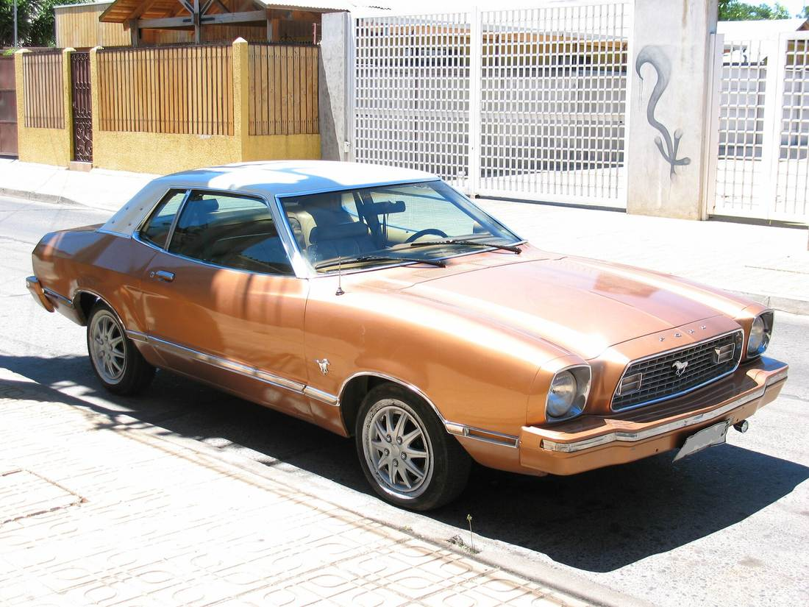

Μια ιδέα του 1962
Το 1962 η Ford παρουσίασε το πρωτότυπο Mustang I, ένα μικρό διθέσιο σπορ αυτοκίνητο με κινητήρα στη μέση. Ήταν όμορφο, αλλά δεν ήταν αυτό που χρειαζόταν η εταιρεία. Ο Λι Ιακόκκα, τότε αντιπρόεδρος της Ford, πίστευε σε κάτι διαφορετικό: ένα φθηνό σπορ αυτοκίνητο με τέσσερα καθίσματα, που θα το αγόραζαν οι νέοι.
Το αποτέλεσμα παρουσιάστηκε στις 17 Απριλίου 1964 στην Παγκόσμια Έκθεση της Νέας Υόρκης. Η τιμή του ήταν 2.368 δολάρια και οι παραγγελίες ξεπέρασαν κάθε προσδοκία. Μέσα σε δύο χρόνια είχαν πουληθεί πάνω από ένα εκατομμύριο αυτοκίνητα.

Οι γενιές με μια ματιά
-
1964–1973 — Πρώτη γενιά. Το αυθεντικό pony car. Το 1965 προστέθηκε η fastback έκδοση και το 1969 εμφανίστηκε το Mach 1 με κινητήρα 428 Cobra Jet.
-
1974–1978 — Mustang II. Μικρότερο και ελαφρύτερο, βασισμένο στο Ford Pinto, λόγω της πετρελαϊκής κρίσης. Παρόλο που οι φανατικοί το επέκριναν, πούλησε εξαιρετικά καλά.
-
1979–1993 — Fox body. Η μεγαλύτερη σε διάρκεια γενιά. Ελαφρύ αμάξωμα, πίσω κίνηση και ο θρυλικός κινητήρας 5.0 που έκανε το Mustang ξανά γρήγορο και προσιτό.
-
1994–2004 — SN95. Πιο στρογγυλεμένες γραμμές και επιστροφή του ονόματος «Cobra». Το 1999 έγινε το λεγόμενο «New Edge» facelift.
-
2005–2014 — S197. Η ρετρό γενιά που επέστρεψε στις αναλογίες του 1969, με κινητήρα V8 4.6 λίτρων και 300 ίππους.
-
2015–2023 — S550. Για πρώτη φορά ανεξάρτητη πίσω ανάρτηση και πώληση σε όλο τον κόσμο, με κινητήρα 2.3 EcoBoost ή V8 5.0.
-
2024–σήμερα — S650. Η σημερινή γενιά, με τον V8 των 5.0 λίτρων και την κορυφαία έκδοση Dark Horse με 500 ίππους.

Το Mustang στον κινηματογράφο
Το 1968 η ταινία «Bullitt» με τον Στιβ ΜακΚουίν έκανε το Mustang παγκόσμιο σύμβολο. Η καταδίωξη στους λόφους του Σαν Φρανσίσκο θεωρείται μία από τις καλύτερες σκηνές στην ιστορία του κινηματογράφου. Η Ford κυκλοφόρησε αργότερα ειδικές εκδόσεις Bullitt προς τιμήν της ταινίας.